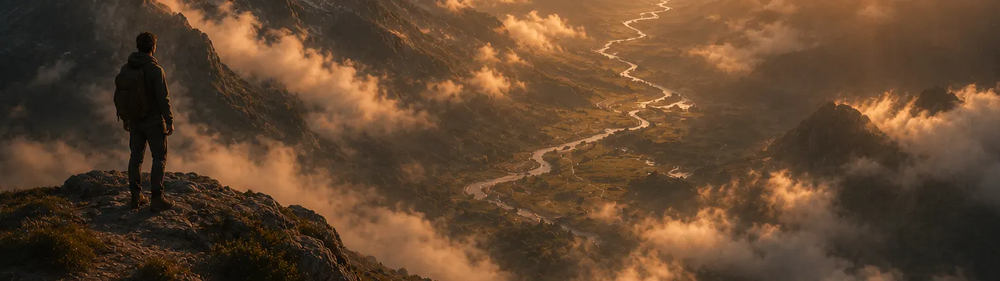
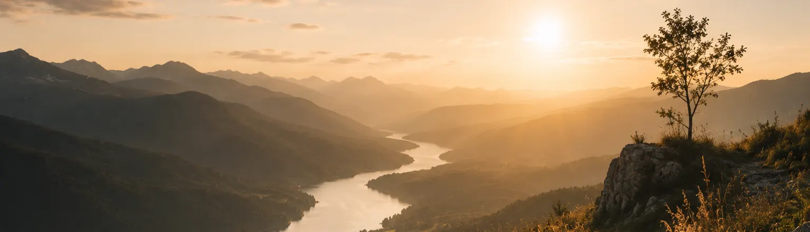
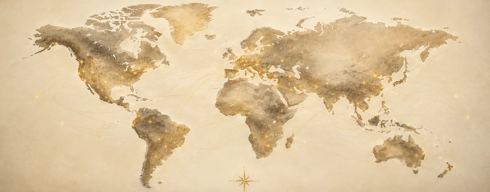

Viviendo desde la Nueva Vida.
Antes de que nacieras,
ya existía una historia.

El Gran Sueño de Dios nunca cambió.
No comenzamos haciendo. Comenzamos viendo.
Viendo lo que Él ya hizo, quiénes somos en Él y el lugar que siempre tuvimos en su historia.

Quizás no lo estás haciendo tan mal como pensás.
Quizás solo necesitás verlo con mayor claridad.
Hay muchas otras personas respondiendo al mismo llamado.
Y ese lugar tiene un nombre.

Viví desde quien ya sos en Cristo
Un espacio para despertar, afirmar y caminar juntos; aprendiendo a vivir desde quienes ya somos en Cristo, como participantes de Su Gran Sueño.
Todos respondemos desde un lugar distinto.
¿En qué lugar te sentís hoyFui llamado. Quiero descubrir hacia dónde.
Quizás ya tenés claridad. Quizás todavía estás buscando dirección. En cualquier caso, este es tu lugar.
Empezar a caminar Quiero servirQuiero poner al servicio lo que Dios formó en mí.
Todo lo que Dios fue formando en vos puede convertirse en una bendición para otros.
Explorar cómo Ya estoy en caminoQuiero seguir creciendo y dando más fruto.
Servís donde Dios te puso. Y sabés que todavía hay más por descubrir, más por aprender y más fruto por dar.
Seguir creciendo¿Querés impulsar este camino de otra forma? También podés colaborar.
Formación, Encuentros, Recursos, Conexiones.
O simplemente alguien que te ayude a dar unos pasos más.
Una conversación a solas
A veces el primer paso no es elegir un camino.
Es ser escuchado.
Si querés empezar por un encuentro personal conmigo, dejame tus datos y coordinamos. Me encantaría charlar con vos.
Quiero una sesión con Adrián